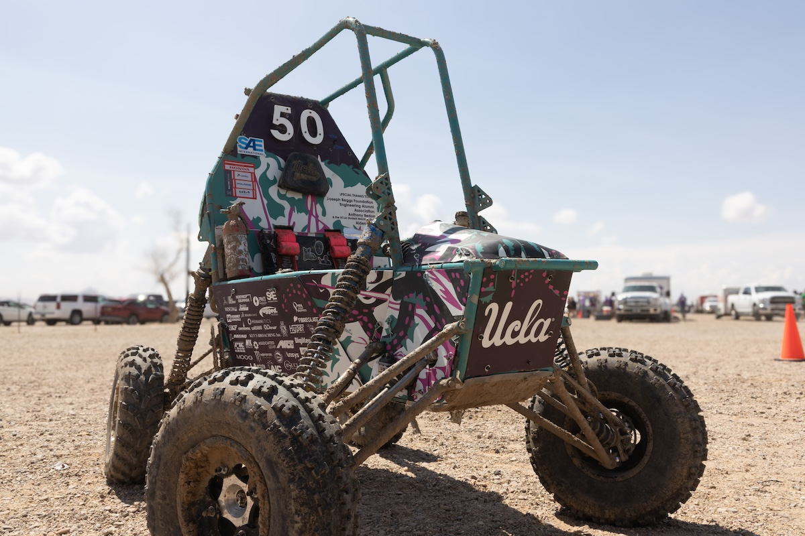
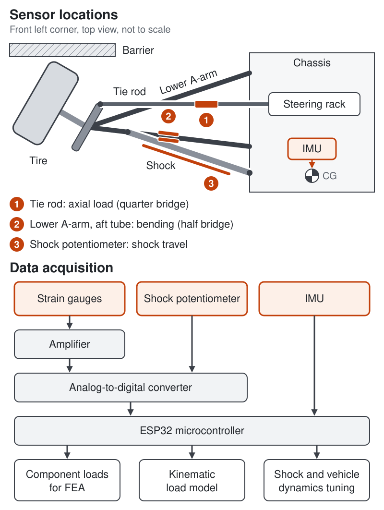
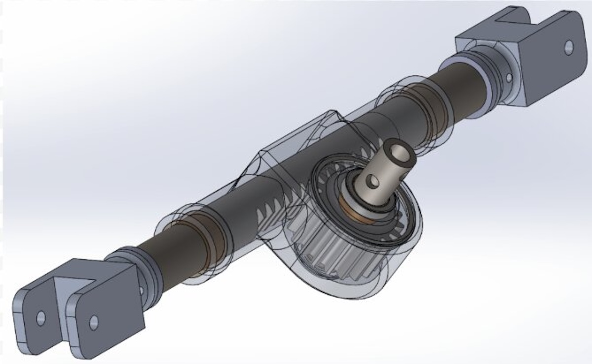
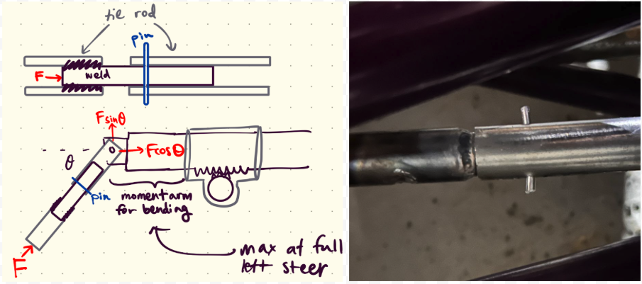

Baja steering and suspension

Overview
Baja SAE is a collegiate competition where student teams design, build, and race a one-seat off-road vehicle. I work on steering and suspension for Bruin Racing at UCLA. I joined in 2024 on the Driver Interface subteam, designed and built the steering system last year, and now lead suspension testing and analysis.

Suspension and steering data acquisition
This year I am building a data acquisition system for the suspension and steering so that design and tuning decisions are data-driven. An ESP32 logs strain gauges on the tie rod (quarter bridge) and lower A-arm (half bridge), shock potentiometers, and a 6-axis IMU at the chassis center of gravity across impact, bump, cornering and braking tests. The gauges measure the real tie rod and A-arm loads, which replace last year’s shear pin estimate (described below) as the input for FEA on the steering rack and A-arms. The potentiometers and IMU record suspension travel and vehicle acceleration. Using the car’s corner mass, unsprung mass, spring rates, damper curves and suspension geometry, I plan to build a kinematic model that resolves those signals into loads in the shock, A-arm and tie rod, and check it against the gauge data. Once validated, the same data will guide shock tuning (preload, rebound, crossover) and suspension setup (ride height, camber), replacing legacy settings.


Steering rack
I led the design and manufacturing of the team’s first fully custom rack-and-pinion steering system, with a 7/8" 4340 steel rack and an aluminum housing. Travel, eye-to-eye length and mounting locations were customized to our vehicle, which reduced weight. I measured the maximum comfortable lock-to-lock steering wheel rotation (200°) and set the rack travel and ratio to match, which cut steering effort by 18%. A spacer on the rack shaft sets a hard stop against the housing, replacing the previous design’s zip-tied rubber boot, and a single-bolt clevis made it easy to adjust and service. The rack was mounted on both sides to reduce bending loads. There were zero failures across both competitions, and steering wheel backlash measured 6° and stayed stable across the full season.
Steering load testing and analysis
To find the worst-case load on the steering system, I cut a tie rod and welded an internal rod to one side, with the other side held by a shear pin. I ran impacts at maximum steering angle with pins of different diameters, and the smallest pin that did not shear gave the tie rod axial force of about 680 lb. I used that force for hand calculations and FEA on rack bending, which validated the 7/8" rack size with about 40% yield safety margin. I also used spring scale measurements to drive FEA on pinion-on-rack gear tooth stresses and steering column torsion, which let us downsize the column wall thickness.